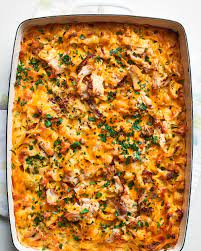

Comforting Turkey Casserole

Recounting
A casserole or "hot dish" is a baked food
with pieces of meat like chicken, various vegetables, and a starchy
binder like flour, potato, or pasta. There is also often a crunchy
or cheesy topping.
This kind of baked food is usually served as a
main course or side
dish and can be served in the same dish that it was cooked in.
Necessary Ingredients
- Two-third cups panko
- Three-fourth cups freshly grated Parmesan, divided
- SIx tablespoons butter, divided, plus more for pan
- Kosher salt
- One chopped small yellow onion
- One and one-fourth cups sliced cremini mushrooms
- One fourth cup all-purpose flour
- Four cups low-sodium chicken stock
- Two cups shredded cheddar
- Three cups cubed cooked turkey
- Eight-ounce cooked egg noodles
- One cup frozen peas
- Three tablespoons freshly chopped parsley
- Garnish
- One tablespoon lemon juice
- Freshly-ground black pepper